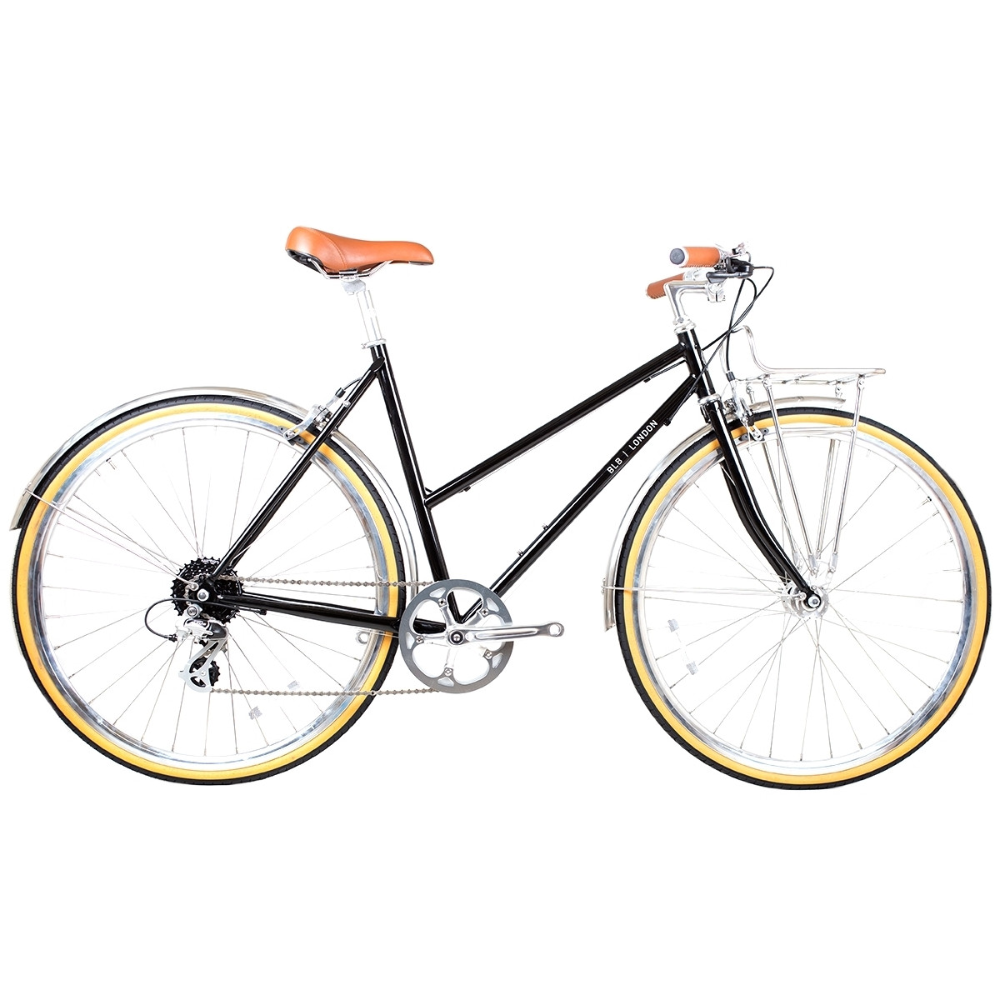
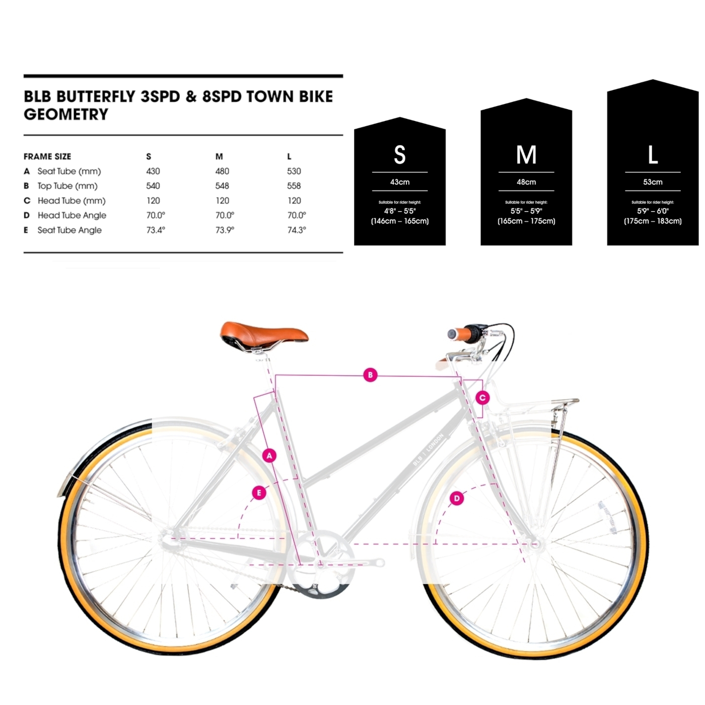

BLB BUTTERFLY - Women City-Bike - 2022 - black


Price : 511,76 €
- Product Name: BMC ROADMACHINE ONE - Ultegra Di2 Carbon Roadbike - 2022 - metallic off-white & black
- Manufacturer: BMC Bikes
- Item Code: BMC532763
- Activity: Cycling
- Gender: men
- Material: Carbon
- Usage bikesport: Road Bike, Endurance
- Chain: Shimano Ultegra
- Cassette: Shimano Ultegra
- Shifter: Shimano Ultegra Di2
- Rear derailleur: Shimano Ultegra Di2, 12-speed
- Front derailleur: Shimano Ultegra Di2